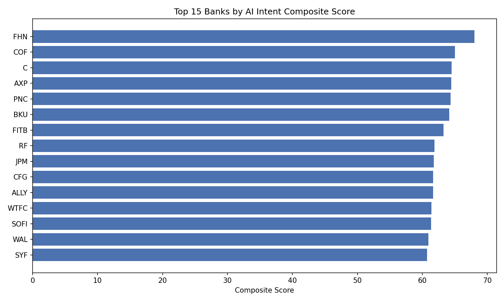
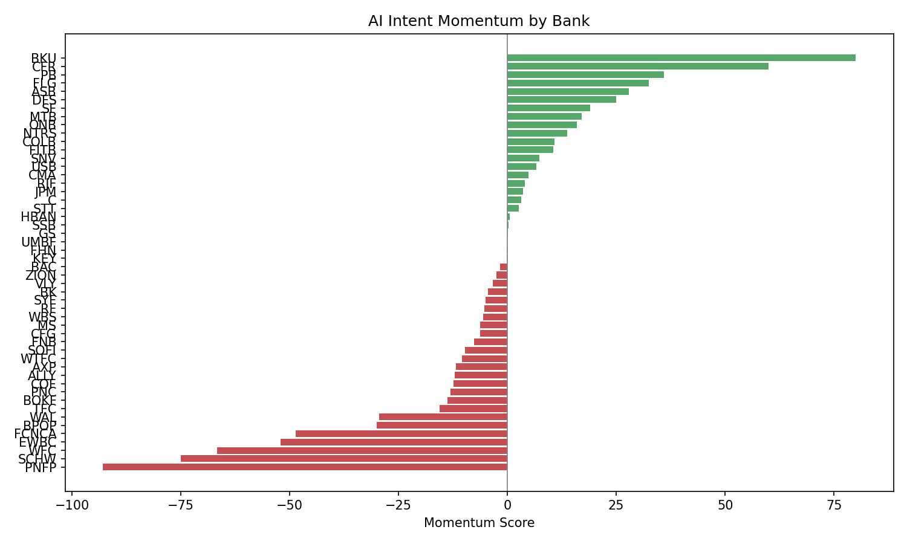

BUFN403 Capstone
How are America's top 50 banks actually adopting AI?
Beyond keyword counting — classifying intent, breadth, and momentum.
AI Team 1 • Spring 2026
Earnings Transcripts
Q1 2024 – Q4 2025
SEC Filings
10-K, 10-Q, 8-K, DEF 14A
FDIC Call Reports
Quarterly financial data
1 — Exploring investigating, piloting
2 — Committing investing, building
3 — Deploying launched, operational
4 — Scaling enterprise-wide, expanding
Each AI chunk is sent to Qwen with:
Qwen returns a JSON object:
If Qwen returns malformed output, the pipeline fails loudly — no silent fallback to weaker heuristics. This guarantees every classification in the final dataset came from the model.
How far along the explore–to–scale spectrum. A bank averaging level 3 (Deploying) scores 75.
How diversified across 6 categories. Equal spread = 100, single category = 0. Penalizes concentration.
Is maturity accelerating or decelerating? Regression through quarterly scores, annualized.
Maturity alone rewards banks that talk big. Breadth catches one-trick ponies. Momentum separates banks that are trending up from those coasting on past deployments.
Momentum is normalized from [-100, +100] to [0, 100] before weighting:
Momentumnorm = (Momentum + 100) / 2
Strongest signal — directly measures how advanced a bank's AI actually is
Diversified AI strategy indicates organizational depth and commitment
Noisiest signal — valuable direction but sensitive to quarterly variation
| Rank | Bank | Maturity | Breadth | Momentum | Composite |
|---|---|---|---|---|---|
| 1 | Cullen/Frost Bankers | 67.5 | 83.9 | +50.0 | 74.4 |
| 2 | Popular, Inc. | 78.6 | 75.3 | +10.0 | 73.9 |
| 3 | Ally Financial | 75.6 | 83.4 | -12.0 | 73.6 |
| 4 | Citigroup | 68.0 | 86.7 | +21.2 | 73.4 |
| 5 | Old National Bancorp | 66.3 | 90.4 | +13.0 | 73.3 |
| 6 | Bank of America | 74.1 | 84.4 | -11.9 | 73.2 |
| 7 | East West Bancorp | 68.8 | 85.5 | +1.4 | 71.9 |
| 8 | Western Alliance | 66.7 | 85.7 | +10.0 | 71.6 |
| 9 | Comerica | 66.9 | 85.5 | +9.3 | 71.6 |
| 10 | M&T Bank | 69.8 | 80.1 | +14.9 | 71.6 |
Most banks are split between early exploration and active deployment — the "committing" phase is thin, suggesting banks jump quickly from evaluating to deploying.
| Category | Mentions |
|---|---|
| GenAI / LLMs | 557 |
| RPA / Automation | 283 |
| Fraud / Risk Models | 160 |
| Predictive ML | 65 |
| Computer Vision | 39 |
| NLP / Text | 30 |

Top 15 by Composite Score

Momentum: Who's Accelerating?
streamlit run dashboard/app.py
4 interactive pages • 50 banks • Real-time filtering & comparison